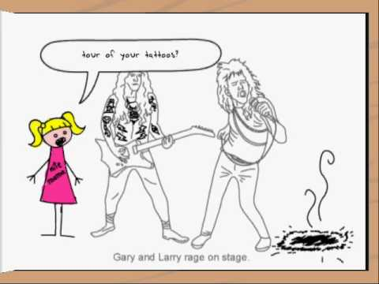

This is all about the band and anything you want to know. Limozeen is a hair metal band that Strong Bad admires; he even has an autographed picture of the members. There was a cartoon based on the band that was set in outer space, entitled Limozeen: "But they're in space!". However, its cancellation was announced during the pilot episode by Teeg Dougland, the band's producer. They even have their own coloring book, which was published for the 1989 Limozeen "Ladies, We're Staying in Room 302 at the Ramada" Tour. Limozeen has made some strange albums, including one called Feed the Childrens, though it could just be a single. Strong Bad featured one of the songs on this album as number two in his bottom 10 because the lyrics mainly consisted of "la la's", "na na's", and "doot do's".
Great Times with the crew.Limozeen has made some strange albums, including one called Feed the Childrens, though it could just be a single. Strong Bad featured one of the songs on this album as number two in his bottom 10 because the lyrics mainly consisted of "la la's", "na na's", and "doot do's".